World Models from Scratch: Two Toy Experiments (with an in-browser demo)
A world model has three pieces: an encoder, a state-space model, and a decoder. This post builds two of them from scratch — one for CartPole, one for a little visual "counting + mass" world — and at the end you can drive the trained model yourself, in your browser.
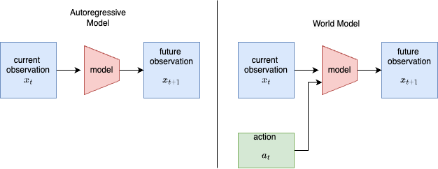
1. World models: the idea (and the math)
An autoregressive (AR) model predicts the next observation from the past: $$ x_{t+1} \sim p_\theta(x_{t+1} \mid x_{\le t}). $$ A world model (WM) also conditions on the action the agent takes, so it can answer "what happens if I do $a_t$?": $$ x_{t+1} \sim p_\theta(x_{t+1} \mid x_{\le t},\, a_t). $$ That extra $a_t$ is the whole difference (figure above): it turns a passive predictor into something an agent can plan and act inside. We use the Dreamer recipe: learn a compact latent world model from data, then train a controller purely on trajectories imagined by that model.
2. The model (RSSM)
State is split into a deterministic path $h_t$ (a GRU memory) and a stochastic latent $z_t$: $$ \begin{aligned} h_t &= f_{\text{GRU}}\big(h_{t-1},\,[\,z_{t-1},\,a_{t-1}\,]\big) &&\text{(recurrence)}\\ \text{prior:}\quad & p_\theta(z_t \mid h_t) = \mathcal N\!\big(\mu_\theta(h_t),\,\sigma_\theta(h_t)\big)\\ \text{posterior:}\quad & q_\phi(z_t \mid h_t, x_t) = \mathcal N\!\big(\mu_\phi(h_t,e_t),\,\sigma_\phi(h_t,e_t)\big),\ \ e_t=\text{enc}(x_t)\\ s_t &= [\,h_t,\,z_t\,] &&\text{(model state / ``feature'')} \end{aligned} $$ From the state $s_t$, three heads predict the observation, the reward, and the "keep going" probability: $$ \hat x_t = g_\theta(s_t),\qquad \hat r_t = r_\theta(s_t),\qquad \hat c_t = \sigma\big(c_\theta(s_t)\big)\approx \Pr(\text{not terminal}). $$ The prior dreams the next latent without looking at the world; the posterior corrects it using the real observation $x_t$. This split is exactly the open-loop vs closed-loop behaviour we study in the results.
3. Training the world model
Fit everything by minimising reconstruction + reward + continue + a KL term: $$ \mathcal L_{\text{WM}}=\mathbb E_{q_\phi}\Big[\underbrace{\lVert x_t-\hat x_t\rVert^2}_{\text{reconstruction}} + \underbrace{(r_t-\hat r_t)^2}_{\text{reward}} + \underbrace{\text{BCE}(c_t,\hat c_t)}_{\text{continue}} + \beta\,\mathrm{KL}_t\Big]. $$ The KL keeps the dream (prior) close to the observation-grounded posterior, with KL balancing and free nats $\kappa$: $$ \mathrm{KL}_t = \alpha\,\max\!\big(\kappa,\ \mathrm{KL}[\,\text{sg}(q_\phi)\,\|\,p_\theta\,]\big) + (1-\alpha)\,\max\!\big(\kappa,\ \mathrm{KL}[\,q_\phi\,\|\,\text{sg}(p_\theta)\,]\big), $$ where $\text{sg}[\cdot]$ is stop-gradient ($\alpha=0.8,\ \kappa=1$).
4. Learning to act — inside imagination
Starting from real model states, we roll the prior forward $H$ steps using the actor $\pi_\psi(a\mid s)$, never touching the environment. On this imagined trajectory we use a $\lambda$-return: $$ V^\lambda_t = \hat r_t + \gamma\,\hat c_t\Big[(1-\lambda)\,v_\xi(s_{t+1}) + \lambda\,V^\lambda_{t+1}\Big],\qquad V^\lambda_H=v_\xi(s_H). $$ The critic regresses to it and the actor maximises it (discrete actions use straight-through gradients, so the signal flows back through the dynamics), plus an entropy bonus $\eta$: $$ \mathcal L_v=\mathbb E\Big[\sum_t\big(v_\xi(s_t)-\text{sg}(V^\lambda_t)\big)^2\Big],\qquad \mathcal L_\pi=-\mathbb E\Big[\sum_t V^\lambda_t\Big]-\eta\,\mathbb E[\,\mathcal H(\pi_\psi)\,]. $$ A slow target critic stabilises the bootstrap: $\bar\xi \leftarrow (1-\tau)\,\bar\xi + \tau\,\xi$.
5. Acting: open loop vs closed loop
When the trained agent plays, it can update its latent two ways each step: $$ \text{open-loop (dream):}\ \ z_t\sim p_\theta(z_t\mid h_t),\qquad \text{closed-loop (peek):}\ \ z_t\sim q_\phi(z_t\mid h_t,x_t). $$ Open-loop needs no observations but lets small errors compound; closed-loop re-grounds on the real $x_t$ every step. We measure exactly this trade-off below.
Exp 0: CartPole world model (the baseline)
A good first experiment before moving to images: it exercises every core world-model idea with minimal complexity.
Objective. Train a world model that learns CartPole's dynamics from interaction data, then use it to imagine futures and train a controller inside the model's dreams.
Why CartPole first? It's fully observable and low-dimensional (4-D state), fast to debug, and a classic control task — so it's easy to verify whether the model learned accurate physics. It builds intuition for dynamics, imagination, and model-based control before pixels enter the picture.
Setup.
- Environment:
CartPole-v1(Gymnasium). State $x\in\mathbb R^4$ = (cart position, cart velocity, pole angle, pole angular velocity); two discrete actions (push left / right); reward $=+1$ each step until the pole falls or 500 steps elapse. - A key modelling choice. The 500-step cap is a time limit (truncation), not a failure. We set the continue target $c_t=1$ for truncation and $c_t=0$ only for a real fall — otherwise the model learns "the world always ends at 500" and gives up.
World-model components.
- Encoder — a small MLP (the state is already low-dimensional) → latent.
- Dynamics (core) — a GRU taking (latent + action) → next latent, reward, and done probability.
- Decoder + reward/continue heads — small heads on the model state.
| Component | Choice | Component | Choice | |
|---|---|---|---|---|
| Deterministic state $h$ | 128 | Discount $\gamma$ / $\lambda$ | 0.99 / 0.95 | |
| Stochastic latent $z$ | 32 (Gaussian) | Imagination horizon $H$ | 15 | |
| Hidden units | 128 (ELU MLPs) | KL balance $\alpha$ / free nats $\kappa$ | 0.8 / 1.0 | |
| World-model LR | $6\times10^{-4}$ | Target-critic rate $\tau$ | 0.02 | |
| Actor / critic LR | $8\times10^{-5}$ | Batch / sequence length | 32 / 20 | |
| Entropy bonus $\eta$ | $3\times10^{-3}$ | Updates | 3000 (~4 min, CPU) |
Training loop. Seed the replay buffer with random episodes, then repeat: sample sequences → update the world model ($\mathcal L_{\text{WM}}$) → imagine and update actor + critic ($\mathcal L_\pi,\ \mathcal L_v$) → collect a fresh episode with the current policy ($\varepsilon$-greedy) → evaluate.
Code map. RSSM + heads → world_model.py; actor / critic / imagination → dreamer.py; replay buffer → buffer.py; training loop → train.py; metrics + plots → evaluate.py.
Exp 0 — results (what actually happened)
Short version: it worked. We trained a world model on CartPole, then trained the player only inside the model's imagination — and when we dropped that player into the real game, it balanced the pole perfectly.
Think of the world model as three small parts:
- Eyes (encoder): look at the game numbers (cart position, speed, pole angle, pole speed) and turn them into a small "idea".
- Imagination (the core): given the current idea + your action, guess the next idea — plus the reward and whether the pole just fell.
- Translator (decoder): turn an "idea" back into real game numbers, so we can check and draw it.
Then a small player (actor) and a judge (critic) learn to play — but they practice only in dreams. The model imagines short futures, the player improves inside them, and it never touches the real game while learning.
The score.
- Real game: 500 / 500, every single time (100 games in a row). 500 is the maximum — the pole never fell.
- That beats the "solved" target of 475.
- The model can see ~10+ steps into the future accurately — its pole-angle guess is off by only ~0.03 rad even 11 steps ahead.
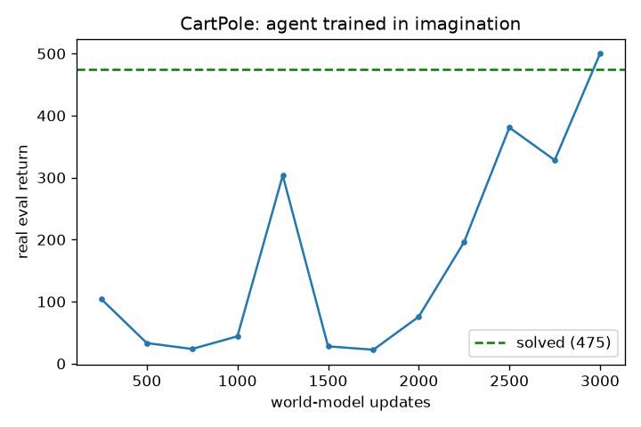
The most interesting part: dreaming alone vs dreaming with a peek.
- Open-loop (dream alone): after the first frame the model imagines everything itself. Tiny mistakes pile up, and after ~80 steps the dreamed pole drifts away and tips over.
- Closed-loop (peek every step): the model glances at the real game each step and corrects itself — staying glued to reality, about 11× less drift (0.03 vs 0.33).
This is why the player keeps its eyes open while actually playing, and only trusts short dreams while practicing.
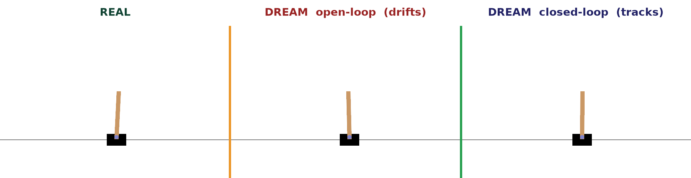
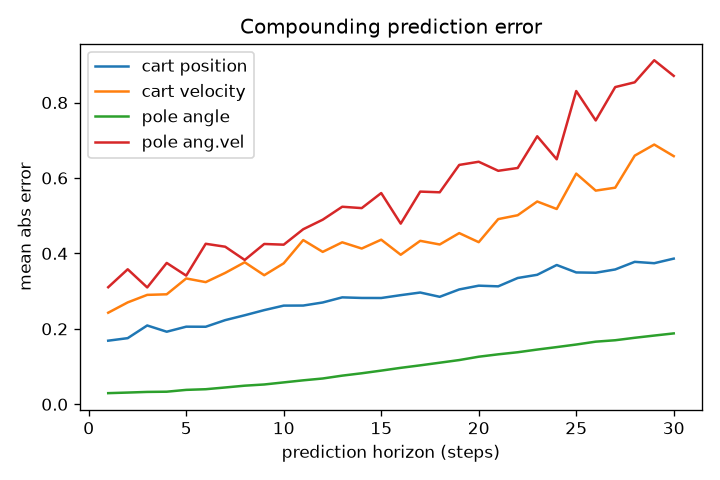
How often does the dream need to peek? (10 vs 20 vs 40). Peeking every step keeps the dream perfect — but that's a lot of peeking. So we let the dream run on its own and gave it one real peek every 10, 20, or 40 steps.
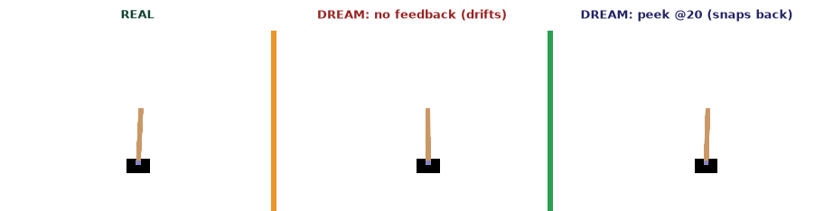
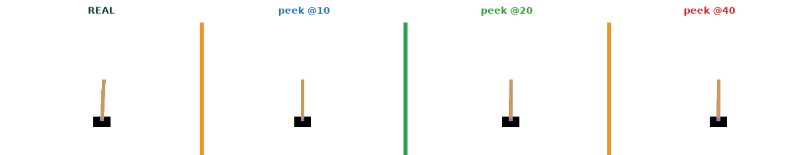
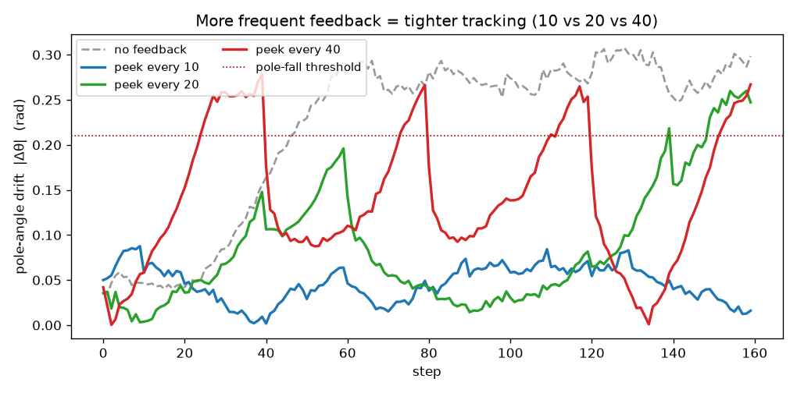
What we found (drift = how far the dreamed pole angle is from the real one):
- Every 10 steps: stays tight — barely drifts (max ~0.09).
- Every 20 steps: drifts up to ~0.26 between peeks — getting risky.
- Every 40 steps: drifts almost as much as never peeking.
Simple takeaway: a little feedback goes a long way. Even peeking 1 step in 10 keeps the dream ~5× closer to reality than dreaming blind.
Honest notes (what was tricky). The model's predictions were always good; the hard part was the player's training being wobbly — it would hit a perfect 500, then bounce around. Adding a target critic (a slow, steady copy of the judge) made it stable. Forcing extra attention on "the pole fell" moments backfired (the model became scared the pole always falls), so we kept that gentle. And the time-limit-vs-failure distinction at 500 steps mattered — get it wrong and the model gives up.
Conclusion (Exp 0)
- A controller trained entirely inside a learned world model's imagination solved CartPole: 500 / 500 over 100 real episodes, clearing the "solved" bar (475).
- Predictions were accurate (pole angle off by ~0.03 rad even 11 steps ahead). The only hard part was controller stability — fixed with a slow target critic.
- Open-loop dreams drift (
0.33 rad over 500 steps); closed-loop tracking stays glued to reality (0.03 rad, ~11× lower). - Takeaway: the world model is a good short-horizon simulator. Trust it for short imagined rollouts and control, but re-ground it on real observations frequently.
Experiment 1: counting + mass (now with pixels)
Goal. Build a minimal visual world model that tracks and predicts object count and total mass over time from image sequences. It introduces pixel input while keeping the state low-dimensional and interpretable, and success is easy to measure (accuracy of predicted count/mass).
Task setup. Synthetic 64×64 image sequences of random colored shapes (circles / squares) that appear, disappear, or stay. Each object has a mass from its size (small = 1, medium = 2, large = 5). Three actions: add a random object, remove one, no-op.
Architecture. A CNN encoder → feature vector with an auxiliary count/mass head; a GRU dynamics core maintaining the believed (count, total-mass); and prediction heads for next count, next mass, and an optional reconstruction. Same encoder → latent-dynamics → heads → imagination recipe as CartPole — just with a CNN for eyes.
Exp 1 — results (what actually happened)
Short version: the visual world model works — and we built an agent that plans inside it. Four steps: make the data, prove the model can see, teach it the dynamics, then train an agent to reach goals.
Step 1 — the data (a little shapes world). No dataset to download, so we built a tiny simulator: a 64×64 image with colored shapes, each with a size → mass. Each step an action changes the scene; we record image, action, count, and total mass per frame.
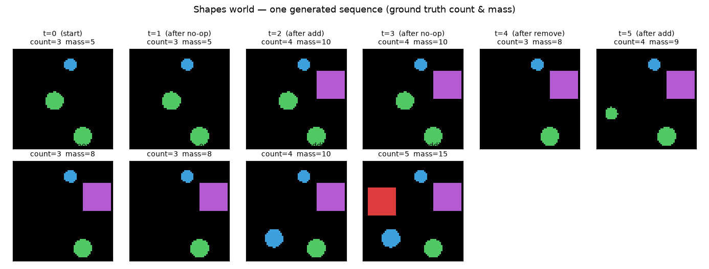
Step 2 — can it even see? (perception check). Before any world model, the most basic test: can a CNN read count and mass from a single image? First try: only 67% — it miscounted when shapes overlapped (two on top of each other look like one). After making the world well-posed (no overlap) and treating count as a 7-way choice: 98% count accuracy. Lesson: a world model is only as good as its eyes — fix perception first.
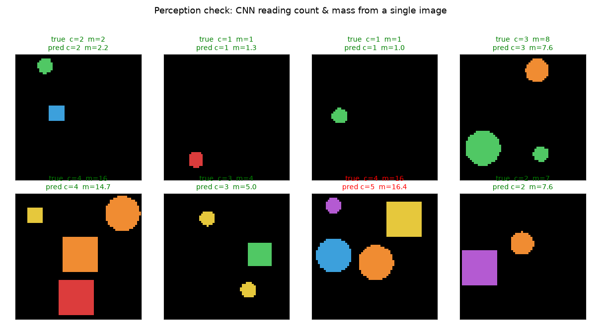
Step 3 — learning the dynamics. Now the real thing: from the current image + your action, predict the future count & mass.
- Closed-loop (peek every frame): near-perfect — count 98–100% even 12 steps ahead.
- Open-loop (dream, no peeking): count drifts from 93% → 67% over 12 steps; mass drifts more. The same compounding-error story as CartPole.
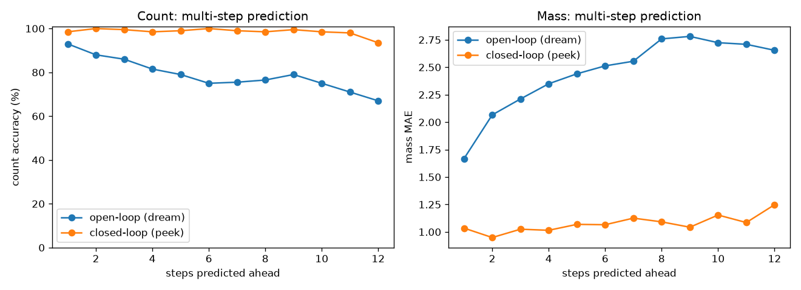
A subtlety: pressing add spawns a shape of random size, so the action alone can't say whether mass goes +1, +2, or +5. The model is honest about it — it predicts count exactly (always +1) but only the average mass change (~2.7). That's why mass drifts and count doesn't, and why peeking is the only way to know the true mass.
Step 4 — planning inside the dream (the controller). We added a goal: reach a target object count. An actor learned — purely inside the model's imagination — to pick add/remove/no-op to hit and hold any target. The first attempt stalled at 66%: probing its decision table showed it had learned the direction (add when below, remove when above) but never learned to stop (no-op), so it overshot and oscillated. A tiny "cost for moving" fixed it — 99% success across all targets.
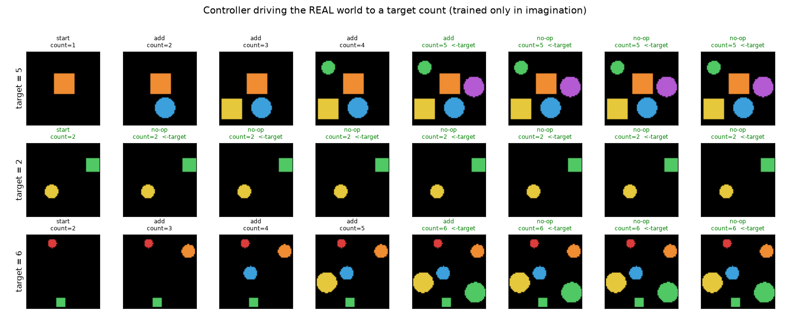
A second controller — for total mass. A separate controller targets a mass total. This is fundamentally harder: you can't choose the size of an added shape (random 1/2/5), so mass is only partially controllable. It gets close — within ~1–2 for moderate targets — but can't hit large targets exactly (reaches 15 when asked for 18). The clean contrast: count is exactly controllable; mass only approximately.
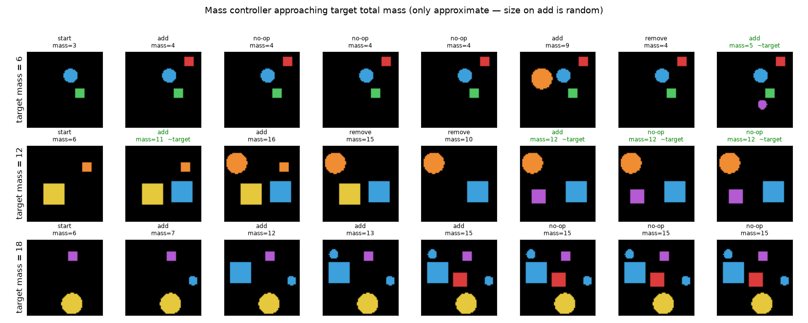
What this experiment showed
- A world model works on pixels, not just numbers.
- The same recipe scales: encoder (now a CNN) → latent dynamics → prediction heads → imagination.
- You can plan inside it: an agent trained only in dreams achieves real goals (99%).
- Two honest lessons: fix perception first, and debug by looking — we found the missing-no-op bug by probing the policy, not guessing hyperparameters.
Experiment 1.5 — Min-Objects: build a target mass with the fewest shapes
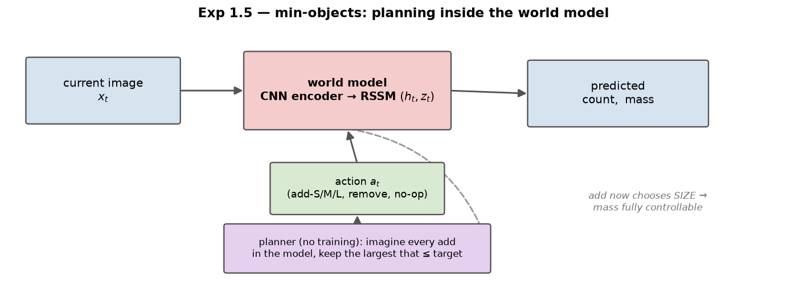
Short version: we turned Exp 1's "get close to a target mass" into an optimisation — hit a target mass with the minimum number of shapes — and solved it by planning inside the world model, reaching within +0.13 shapes of the provably-optimal count at 81% exact-mass accuracy. Getting there exposed a chain of world-model failure modes worth studying in their own right (full log in the repo's issue-solve.md).
Why this task, and the setup
In Exp 1 the add action spawned a random size, so total mass was only approximately controllable. Here we split it so the agent chooses the size, giving a discrete action set
$$
\mathcal A=\{\texttt{no-op},\ \texttt{add-S},\ \texttt{add-M},\ \texttt{add-L},\ \texttt{remove}\},\qquad
\text{mass added} = \begin{cases}1 & \texttt{add-S}\\ 2 & \texttt{add-M}\\ 5 & \texttt{add-L}\end{cases}
$$
remove is made LIFO (delete the last-added shape) so every transition has a deterministic mass. With masses drawn from $\{1,2,5\}$, "reach mass $M$ with the fewest shapes" is exactly the coin-change problem, whose optimum we compute by dynamic programming:
$$
N^\star(M)=\min_{n\in\mathbb Z_{\ge 0}^3}\ \mathbf 1^\top n \quad\text{s.t.}\quad w^\top n = M,\qquad w=(1,2,5),
$$
where $n=(n_S,n_M,n_L)$ counts shapes of each size. This gives a known optimum to score against — the reason this task is a good warm-up before Tower-of-Hanoi (also a known-optimal planning problem).
A compositional world model (so mass is exact)
A scalar mass regressor failed badly here (see the failure catalogue below). The fix is to make the model predict the per-size counts and derive mass and count from them: $$ \hat n_t=\big(\hat n_{S,t},\hat n_{M,t},\hat n_{L,t}\big)\ \sim\ \text{softmax heads on }s_t,\qquad \widehat{\text{mass}}_t=w^\top \hat n_t,\quad \widehat{\text{count}}_t=\mathbf 1^\top \hat n_t . $$ Each add-action just increments one head — a clean, learnable dynamic — and mass is exact whenever the counts are right. The world-model loss is per-size cross-entropy plus the usual KL: $$ \mathcal L=\sum_{k\in\{S,M,L\}}\mathrm{CE}\big(\hat n_{k,t},\,n_{k,t}\big)\;+\;\beta\,\mathrm{KL}_t . $$ Crucially, this only worked after (a) making the three sizes visually distinct (radii $3/6/9$) and (b) warm-starting the encoder from a dedicated per-size perception model — with those, closed-loop mass error drops from $\approx1.5$ to $\mathbf{0.3\text{–}0.85}$.
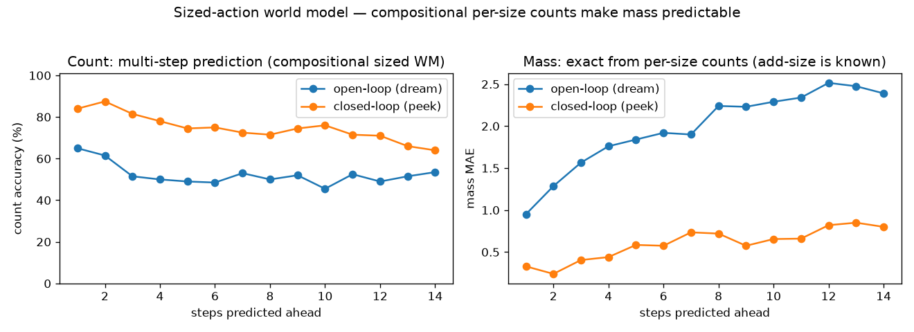
Two ways to reach the goal — and which one worked
(a) Learn an actor in imagination (Dreamer-style). Roll the model forward $H$ steps and reward $$ r_t=\underbrace{\exp\!\Big(-\big((\widehat{\text{mass}}_t-M)/\sigma\big)^2\Big)}_{\text{sharp, peaks at the target}}\;-\;\lambda_c\,\frac{\widehat{\text{count}}_t}{c_{\max}}\;-\;\rho\,\mathbf 1[a_t\neq\texttt{no-op}] . $$ The bounded Gaussian term (not a flat quadratic) gives a real gradient to hit exactly and makes holding optimal once there; the count and per-move penalties push toward few, large shapes. Despite much tuning this stayed fragile (over-/under-builds).
(b) Plan inside the model (MPC) — this is what worked. Freeze the model and, each real step, ground the image to a latent, imagine one step per candidate action, and take the largest add that does not overshoot the target (then hold): $$ a_t=\begin{cases}\texttt{no-op}, & |\widehat{\text{mass}}(s_t)-M|\le\tau\\[2pt] \arg\max\limits_{k:\ \widehat{\text{mass}}(s_t,\texttt{add-}k)\le M+\tau}\ \text{mass}(k), & \text{otherwise}\end{cases} $$ Picking the largest non-overshooting shape is the greedy coin-change rule, so the built scene is (near-)minimal — but every quantity comes from the learned model. Re-grounding each step (MPC) corrects model drift, and using the argmax (discrete) mass read-out rather than the probability-weighted mean removed a systematic over-estimate.
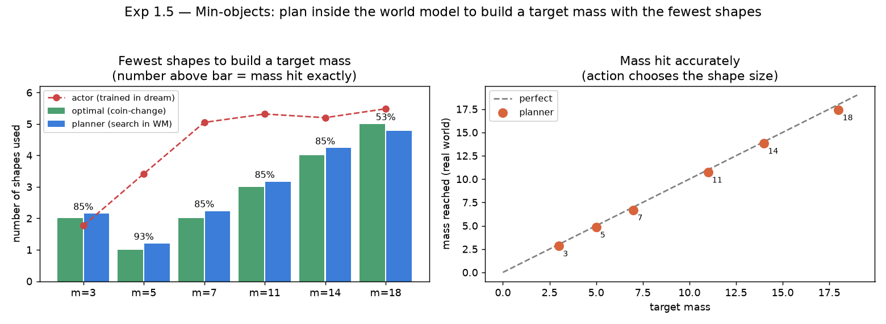
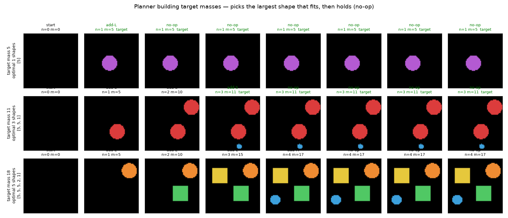
What worked, what didn't, and why (the honest catalogue)
Every failure below traces to one principle: a controller is only as good as its world model, and a world model is only as good as its eyes.
| # | Symptom | Root cause | Fix |
|---|---|---|---|
| 1 | mass MAE ≈ 3, closed-loop worse than open | remove deleted a random object → mass-after-remove unpredictable |
LIFO remove (deterministic) → MAE 3.1 → 1.0 |
| 2 | actor stops ~1 object short | count/move penalties outweigh last-object gain | shrink penalties |
| 3 | actor never fine-tunes to the target | flat quadratic reward (1.5-off costs ≈0.1) | sharp bounded reward $\exp(-((m-M)/\sigma)^2)$ |
| 4 | high dream-return, bad reality; oscillates add↔remove | actor exploited an imperfect remove in the dream |
mask remove (building needs none) |
| 5 | under-builds every non-multiple-of-5 | scalar mass head can't compose | per-size count heads (derive exact mass) |
| 6 | per-size heads only ~40% | small vs medium look alike | distinct radii 3/6/9 + per-size perception warm-start |
| 7 | actor over-builds (~6 smalls) | imagination noise makes large adds "risky" | pivot to planning (MPC) |
| 8 | planner: target 5 used 2 shapes; 18 stops early | probability-weighted mass reads high | use argmax (discrete) mass read-out |
Scoreboard (mean over targets 3–18):
| Approach | mass-hit | shapes vs optimal | verdict |
|---|---|---|---|
| actor, strong penalties | ~0% | −1 (under) | fail |
actor, sharp reward, remove on |
(dream 27) | oscillates | model exploit |
| actor (compositional WM) | ~30% | +1.5…+2 (over) | fail |
| planner (MPC) + discrete mass | 81% | +0.13 | works |
The one residual limit: target 18 (needs 5 shapes) lands exactly only 53% of the time — the world model's mass estimate saturates at high object counts, so it thinks it has arrived one shape early. That is fix-perception-first asserting itself one last time.
Takeaways (carried into Tower-of-Hanoi)
- Deterministic dynamics are learnable dynamics (LIFO
remove). - Controllers exploit model errors — constrain the action set to what the task needs.
- Reward shape matters: sharp bounded ≫ flat quadratic for exact targets.
- Compositional > scalar for exact derived quantities — if perception can read the parts.
- When RL-in-imagination is fragile, plan. MPC with 1-step (discrete) predictions beat an actor trained in stochastic dreams for this precise, multi-objective, short-horizon task.
Try it yourself — interactive demo
The real trained models run right here in your browser — the RSSM dynamics, count/mass heads, and controllers, ported to JavaScript and verified to match PyTorch. Four tabs: (1) act and watch the model's belief drift open-loop, then Peek to snap it back; (2) set a target count and let the controller drive to it; (3) set a target mass (only approximately controllable); (4) Min-objects planner — set a target mass and watch it plan inside the model to hit it with the fewest shapes (near-optimal). The widget loads ~13 MB of trained weights, so give it a moment.
Open the demo in a new tab → · Code on GitHub
Conclusion
Two full world models — one for continuous control (CartPole), one for visual prediction + planning (counting/mass) — both follow the same encoder → latent dynamics → imagination pattern, and both show the same lesson: a world model is a great short-horizon simulator. Trust it for short dreams (training, planning), and re-ground it on real observations to stay accurate. That open-loop-drift / closed-loop-stability trade-off is the heart of it — and now you can feel it yourself in the demo above.
Cite this post
Auto-generated. Verify for your institution's requirements.